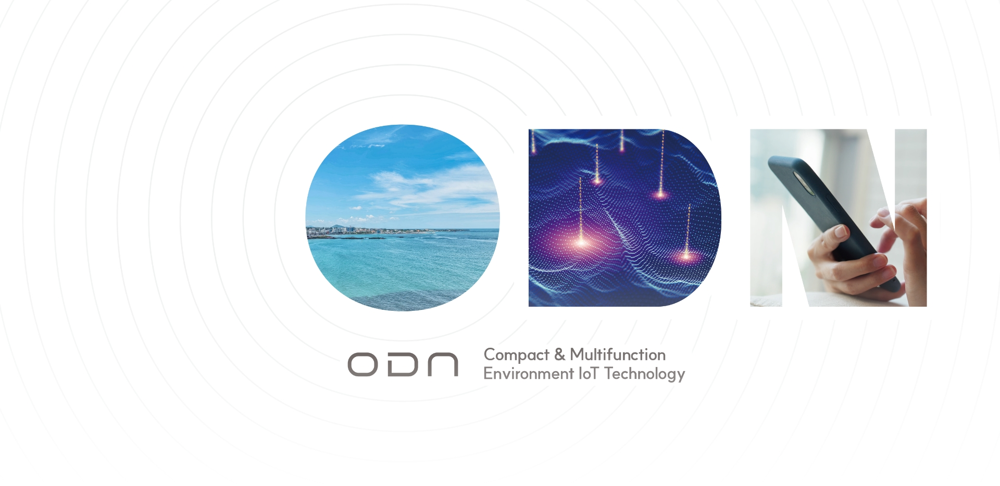
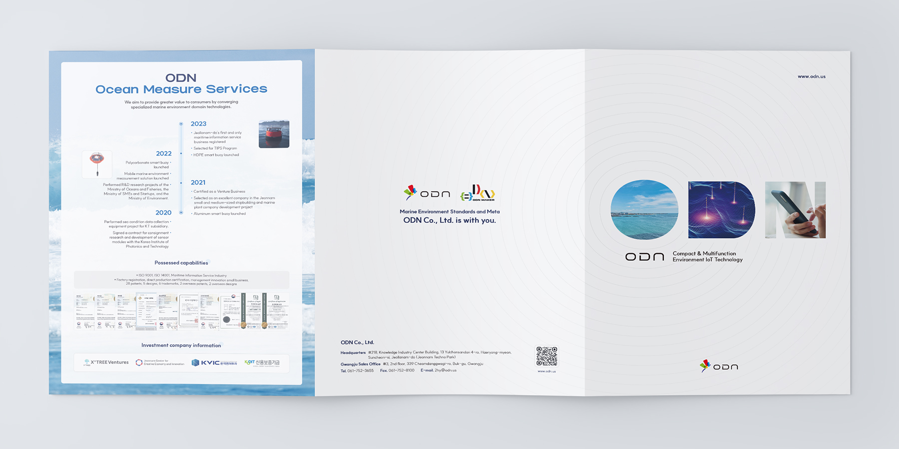
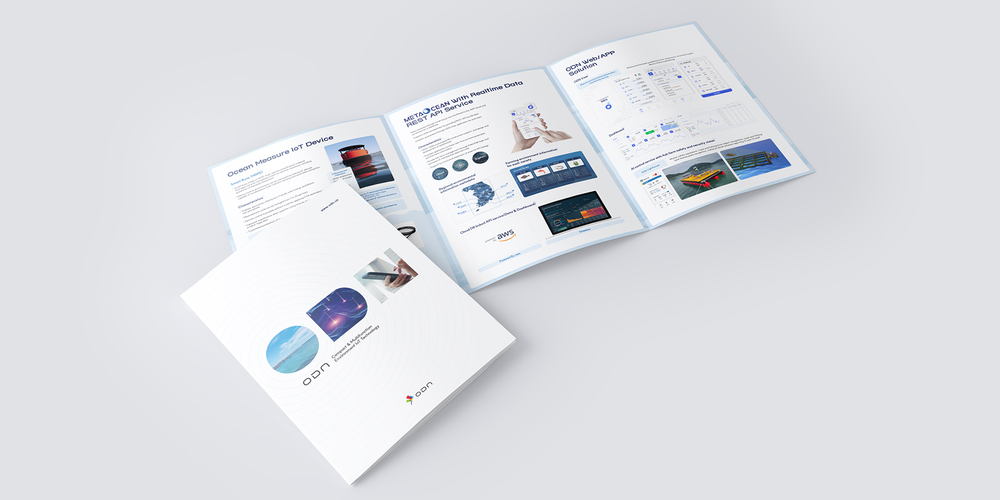

기여도
기획 60%
디자인 100%
사용 프로그램
Indesign
Photoshop
Illustrator
2023
(주)오든 전시회 리플렛
OVERVIEW
(주)오든은 해양 환경 모니터링을 위한 AIoT 스마트 부표 솔루션을 개발하는 기술 중심 기업입니다.
(주)오든의 사업 특징을 반영해 기업 영문명 ODN과 결합한 이미지를 제작하였습니다.
O : 해양 환경 모니터링 제품의 특성을 표현하기 위해 해안 이미지
D : 바다에서 네트워크를 통해 정보가 전송되는 이미지
N : 고객이 스마트폰으로 간편하게 정보를 확인하는 이미지를 적용하여 기업의 핵심 사업을 시각적으로 전달했습니다.
배경에는 바다 위 오든의 스마트 부표에서 고객으로 안전하게 정보를 전달하는 과정을 퍼져나가는 물결로 형상화했습니다.

